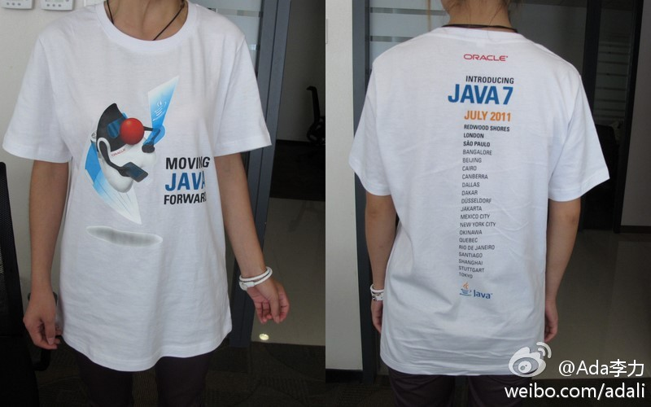

回复@调侃程序员:可惜了，本来联系淘宝技术嘉年华， 希望他们也申请做这个活动。但后来没动静，所以杭州就没有JDK的活动，也就没有T-Shirt了。 //@调侃程序员:怎么样才能领到一件呢？@Ada李力:JDK7的T恤衫. 
//@珠三角技术沙龙：@Ada李力@珠三角技术沙龙:【珠三角技术沙龙2011年7月深圳沙龙报名】java7有什么性特性？Java 7中正式引入了动态语言的支持？ 7月深圳沙龙将会携手Oracle中文社区，你的疑问都将会一一被解答 网页链接